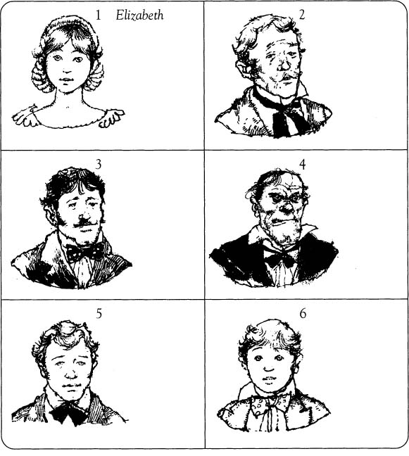

Listen to Part 1:
Ai là tác giả của câu chuyện này?
Mary Shelley đã viết câu chuyện này vào năm 1818 khi bà mới hai mươi mốt tuổi. Bà là người vợ thứ hai của một nhà thơ nổi tiếng tên là Percy Shelley. Percy và Mary là bạn tốt của một nhà thơ tiếng Anh rất nổi tiếng khác tên là Lord Byron. Ba người bạn đã ở cùng nhau tại Thụy Sĩ vào năm 1818. Mary đã viết nên câu chuyện Frankenstain rất nhanh chóng trong thời gian ở đó.
Frankenstain là ai?
Nhiều người nghĩ rằng Frankenstain là tên của Quái vật trong câu chuyện. Thực ra đó là tên của người tạo ra Quái vật. Victor Frankenstein sinh năm 1810 tại thành phố Geneva xinh đẹp ở Thụy Sĩ. Mẹ ông mất khi ông được mười tám tuổi và ba tuần sau đó ông rời khỏi thành phố. Ông đến Đại học Heidelburg vĩ đại của Đức, nơi ông học ngành khoa học. Ông muốn tìm hiểu mọi thứ về cơ thể con người.
Trȧ lời các câu hỏi.
1 Chồng của Mary Shelley là ai?
....................................................................................
2 Mary Shelley viết Frankenstein vào năm nào?
....................................................................................
3 Mary Shelley có viết về quá khứ không?
Listen to Part 2:
....................................................................................
4 Victor Frankenstein đến Heidelburg năm nào?
....................................................................................
5 Victor Frankenstein học gì tại Heidelburg?
....................................................................................
6 Frankenstein là một cuốn sách về sự thật hay hư cấu?
....................................................................................
Điền vào chỗ trống bằng các câu ngắn trong khung bên cạnh bức tranh chính xác.

Listen to Part 3:
Điền vào chỗ trống. Sử dụng mỗi từ trong khung một lần.
‘Tôi nhớ cái nóng của 1 lửa ’, Quái vật nói. ‘Tôi nhớ mình chạy 2 .............................. khỏi nó. Tôi chạy và chạy 3 .............................. thành phố. Trời tối và không ai 4 .............................. tôi. Tôi không biết mình là ai. Tôi không 5 .............................. mình sẽ đi đâu. Nhiều ngày trôi qua.’
‘Lúc đó anh sống thế nào?’ tôi hỏi nó. ‘Anh 6 .............................. gì?’
‘Thỉnh thoảng tôi ăn 7 .............................. từ các cây’, Quái vật trả lời. ‘Thỉnh thoảng tôi lấy 8 .............................. từ những ngôi nhà. Lần đầu tiên 9 .............................. tôi làm điều này, một 10 .............................. đã thấy tôi. Tôi sẽ 11 .............................. quên được 12 .............................. trong mắt anh ấy. Tôi không thể 13 .............................. nó. Tôi muốn trở nên 14 .............................. với anh ấy. Tôi 15 .............................. về phía anh ấy, nhưng anh ấy bỏ chạy mất.’
‘Vài ngày sau, tôi đến một hồ 16 .............................. nhỏ. Khi tôi cúi xuống để 17 .............................. , tôi nhìn thấy 18 .............................. của chính mình. Nó 19 .............................. thế nào! Nó khác xa so với khuôn mặt của những người khác biết bao! Tôi nhìn thấy làn 20 .............................. vàng nhăn nheo của mình. Tôi nhìn thấy đôi mắt vàng và đôi môi mỏng, đen của mình. Giờ thì tôi đã biết tại sao mọi người đều bỏ chạy khỏi tôi. Ngay từ khoảnh khắc đó, tôi 21 .............................. chính mình. Và tôi ghét anh, Victor Frankenstein.’ ‘Anh biết 22 .............................. của tôi sao?’ tôi kêu lên. ‘Phòng thí nghiệm đã bị cháy’, Quái vật trả lời. ‘Tôi nhặt 23 .............................. của anh để bảo vệ mình khỏi ngọn lửa. Tôi đã sử dụng nó để 24 .............................. mình. Sau đó, tôi 25 .............................. một cuốn sách trong 26 .............................. có ghi tên anh. Tôi đã hứa với chính mình. Bất kỳ ai có cái tên đó đều là 28 .............................. của tôi. Bất kỳ ai có cái tên đó đều sẽ 29 .............................. Tôi sẽ lang thang khắp thế giới để tìm 30 .............................. của mình.’
Trȧ lời các câu hỏi.
1 Quái vật đang chạy trốn khỏi điều gì?
....................................................................................
2 Cái gì đã bị cháy?
Listen to Part 4:
....................................................................................
3 Tại sao không ai nhìn thấy Quái vật?
....................................................................................
4 Quái vật sẽ đi đâu?
....................................................................................
5 Quái vật tìm thức ăn ở đâu?
....................................................................................
6 Người đàn ông đầu tiên nhìn thấy Quái vật đã bỏ chạy. Tại sao người đàn ông này lại làm vậy?
....................................................................................
7 Quái vật có muốn làm hại người đàn ông không?
Listen to Part 5:
....................................................................................
8 Tại sao Quái vật dừng lại ở hồ nước?
....................................................................................
9 Quái vật đã nhìn thấy gì khi nhìn vào hồ nước?
....................................................................................
10 Tại sao Quái vật ghét Victor Frankenstein?
....................................................................................
11 Quái vật tìm thấy cuốn sách có ghi tên Frankenstein ở đâu?
....................................................................................
12 Ý nghĩa của trả thù là gì?
Listen to Part 6:
....................................................................................
Viết câu hỏi cho các câu trả lời.
1 Quái vật chạy?
Quái vật chạy qua thành phố
2 Đi đâu
Quái vật đi vào vùng núi.
3 Như thế nào
Anh ta ở lại trên núi trong nhiều ngày.
4 Khi nào
Điều này xảy ra vào năm 1832.
5 Như thế nào
Anh ta biết rằng mọi người sợ anh ta vì họ bỏ chạy.
6 Khi nào
Anh ta nhận ra khuôn mặt của mình rất kinh khủng khi nhìn xuống một hồ nước.
7 Tại sao
Anh ta ghét Frankenstein vì Frankenstein đã làm cho anh ta xấu xí.
8 Cái gì,
Áo choàng là một chiếc áo khoác lỗi thời.
Listen to Part 7:
9 Tại sao
Quái vật mặc áo choàng để tự bảo vệ mình khỏi ngọn lửa.
10 Cái gì
Anh ta tìm thấy một cuốn sách trong túi áo choàng.
11 Ai
Bất kỳ ai mang họ Frankenstein đều là kẻ thù của Quái vật.
12 Cái gì
Anh ta muốn cuộc sống của Victor Frankenstein trở nên khốn khổ như cuộc đời anh ta.
Đặt các từ theo đúng thứ tự để tạo thành câu đầy đủ.
1 muốn Victor một Frankenstein tạo nên muốn man.
Victor Frankenstein muốn tạo ra một người đàn ông.
2 muốn trở Frankenstein tốt người thành.
....................................................................................
3 sấm sét trong sống Trong đến Quái vật.
Listen to Part 8:
....................................................................................
4 vì Quái vật mọi xấu nên người sợ.
....................................................................................
5 có mặt của Quái vật người mù không nhìn thấy.
....................................................................................
6 Quái vật người súng mù bắn con trai.
....................................................................................
7 vợ Quái vật Frankenstein cho phép tạo nên.
....................................................................................
8 khác người xa Quái vật sống đồng ý.
Listen to Part 9:
....................................................................................
9 Quái vật vợ Henry phá hủy..
....................................................................................
10 Quái vật Frankenstein nhiều quốc gia theo đuổi.
....................................................................................
11 cuối băng họ đến đất nước và tuyết.
....................................................................................
12 Frankenstein Quái vật cả hai giết và.
....................................................................................
Xem các ghi chú từ nhật ký của Frankenstein. Viết câu đầy đủ.
Listen to Part 10:
1 14 tháng 1: Làm việc vất vả. Giáo sư nghĩ rằng một ngày nào đó tôi sẽ trở thành nhà khoa học nổi tiếng.
14 tháng 1: Tôi đang làm việc rất chăm chỉ. Các giáo sư nghĩ rằng một ngày nào đó tôi sẽ trở thành một
nhà khoa học nổi tiếng.
2 2 tháng 3: thư từ Elizabeth - muốn đến thăm - nhưng không thể - quá bận rộn với công việc
........................................................................................................................
.......................................................................................................................
.......................................................................................................................
3 16 tháng 5: Đọc nhiều sách tuyệt vời hơn về cái chết trong thư viện. Muốn nhìn thấy người chết.
.......................................................................................................................
.......................................................................................................................
.......................................................................................................................
4 12 tháng 7: Dành buổi chiều tại bệnh viện, trò chuyện với những người già, nhìn cơ thể của họ. Hai người đàn ông đã chết. Đọc đến 2 giờ sáng.
Listen to Part 11:
.......................................................................................................................
.......................................................................................................................
.......................................................................................................................
5 12 tháng 9: tai nạn ngày hôm nay - một người đàn ông trẻ bị giết - sẽ xin thi thể
.......................................................................................................................
.......................................................................................................................
.......................................................................................................................
Viết câu chuyện của mọi người, trả lời các câu hỏi.
1 Bạn là người đàn ông mà Quái vật gặp lần đầu tiên khi hắn lấy thức ăn từ một ngôi nhà.
Listen to Part 12:
Tôi về nhà, bước vào nhà bếp của mình và nhìn thấy một người đàn ông trong bếp. Khi anh ta
quay lại, tôi rất sợ hãi.
.......................................................................................................................
.......................................................................................................................
.......................................................................................................................
.......................................................................................................................
.......................................................................................................................
.......................................................................................................................
.......................................................................................................................
.......................................................................................................................
.......................................................................................................................
Listen to Part 13:
.......................................................................................................................
.......................................................................................................................
2 Bạn là người đàn ông mù mà Quái vật kết bạn.
Một ngày nọ, tôi đang ở nhà một mình. Tôi nghe thấy tiếng gõ cửa, và một người đàn
ông bước vào.
.......................................................................................................................
.......................................................................................................................
.......................................................................................................................
.......................................................................................................................
.......................................................................................................................
Listen to Part 14:
.......................................................................................................................
.......................................................................................................................
.......................................................................................................................
.......................................................................................................................
.......................................................................................................................
.......................................................................................................................
.......................................................................................................................
.......................................................................................................................